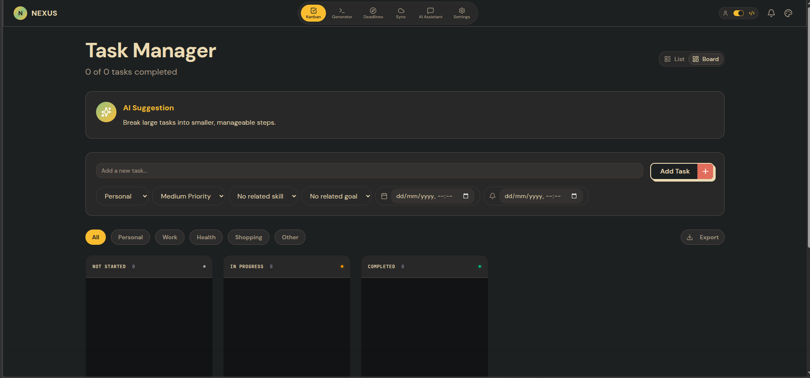
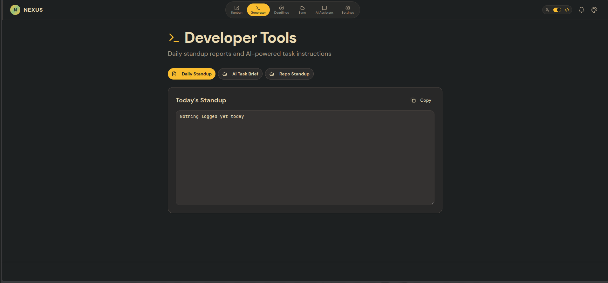
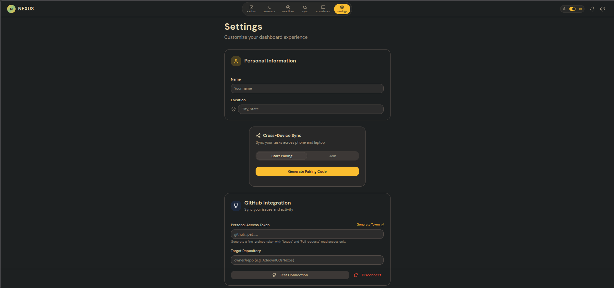
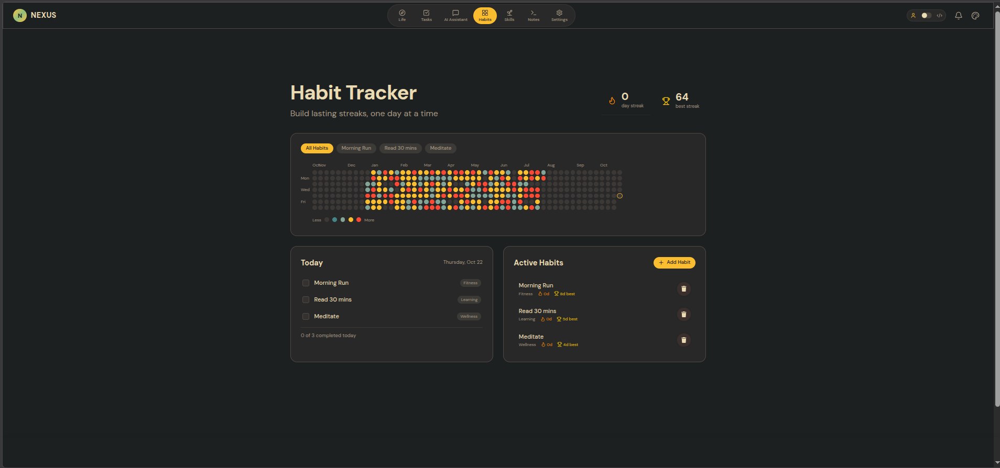
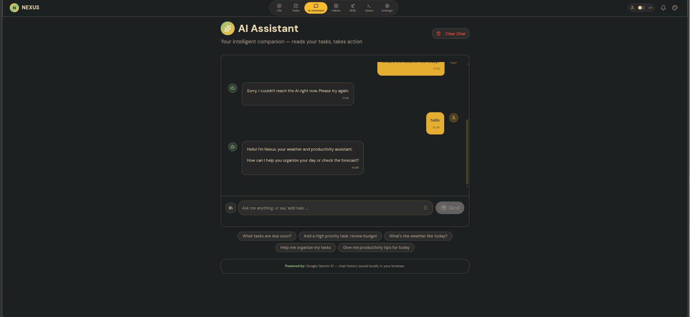

Why Nexos was built
Nexos is an offline-first productivity app for developers. It combines daily habit tracking and personal growth with technical workflows like GitHub-linked Kanban boards and automated standup notes. All state stays on your device.
Web apps that require network round-trips for basic status changes freeze on bad Wi-Fi. Nexos writes locally first, so edits are immediate.
Personal habits, PR discussions, and daily standups don't need to live on corporate servers. Data ownership remains entirely with you.
Engineers track sprint tasks in Jira, habits in mobile apps, and notes in scratchpads. Nexos places both personal and engineering workflows under one roof.
Capabilities and technology stack
Nexos runs as a single-page React app with a Gruvbox-inspired color scheme. An ephemeral PartyKit worker handles WebSocket signaling and AI proxying.
| Layer | Technology | Purpose | Status |
|---|---|---|---|
| Frontend UI | React 18, Vite, Tailwind CSS | Gruvbox palette, keyboard navigation, drag-and-drop via @dnd-kit |
Verified |
| CRDT State | Yjs (y-indexeddb, y-webrtc) |
Conflict-free state resolution, binary vector updates, local storage | Verified |
| Signaling Server | PartyKit Serverless | WebRTC handshake relay and streaming proxy for OpenRouter and Gemini | Shelved |
| PWA Caching | vite-plugin-pwa |
Offline static asset caching and ServiceWorker registration | Verified |
Focuses on technical execution: Kanban tasks linked to GitHub PRs, automated daily standup generator, command-line snippet manager, and sprint countdowns.
Focuses on personal growth: 365-day habit heatmaps, skill portfolios, quick notes bank, and XP leveling based on completed items.
XP and habit streak math
Nexos calculates experience points directly from task completion and active habit streaks. These formulas were verified in test epics NEX-4 and NEX-5.
Points depend on task priority:
High Priority = 50 XP
Medium Priority = 25 XP
Low Priority = 10 XP
Habit Check-in = 15 XP + (Streak_Days × 2 XP)Levels scale quadratically with total points:
Level = floor(sqrt(Total_XP / 100)) + 1
Next_Threshold = (Level^2) × 100
Current_Base = ((Level - 1)^2) × 10001. CRDT state resolution
Conflict-Free Replicated Data Types let multiple browser tabs and devices edit tasks concurrently. Edits merge deterministically without overwriting each other.
02. IndexedDB offline persistence
The client stores Yjs binary updates in IndexedDB via y-indexeddb. When you open Nexos, it reads straight from disk, loading your dashboard instantly.
03. WebRTC mesh and PartyKit signaling
Peer-to-peer sync between devices uses WebRTC data channels. A PartyKit serverless worker relays the initial SDP handshake messages, then lets the devices talk directly.
04. Dual workspace boundaries
To prevent mixing code deadlines with personal routines, Nexos splits the UI via AppModeContext. Toggling modes switches visible views while keeping data contexts loaded in memory.
Kanban board with GitHub PR blocking flags, automated standup generator producing markdown notes, and CLI snippet repository.
Yearly habit contribution heatmap, skill portfolio leveling, goal progress tracking, and personal notes bank.
05. Context-aware AI assistant
A slide-over chat drawer sends your current task titles and priorities to Gemini or OpenRouter through an edge proxy. When the assistant suggests a change, the client executes it safely.
The remote model has no direct database access. When the assistant responds with an action block, the browser verifies the payload and updates the local Yjs document:
<action type="create_task">
{
"title": "Update PartyKit signaling relay",
"priority": "High",
"category": "Work"
}
</action>Application screen walkthrough
Screenshots of the working Nexos dashboard. Click any preview to open the full-resolution view.

Three-column drag-and-drop board with priority badges, GitHub PR blockers, and countdown tags.

Summarizes completed tasks into clean markdown format for async team updates.

Storage quota metrics, notification permissions, and single-click JSON export and import.

Yearly contribution graph with active streak calculations and past-day editing support.

Slide-over chat drawer showing active task awareness and conversational action commands.
Security model and audit notes
Comparing the local-first approach to traditional cloud SaaS tools, along with known limitations from our code review.
| Area | Cloud SaaS (Notion / Jira) | Nexos Local-First |
|---|---|---|
| Data location | Remote vendor database | Local browser IndexedDB |
| Offline support | Limited or blocks edits | 100% functional offline |
| Analytics scripts | Telemetry and session recordings | No tracking scripts |
| Data backup | CSV or proprietary export | Raw JSON import and export |
- CORS: The development PartyKit proxy uses
*for origins. It needs an explicit origin whitelist. - GitHub token: The PAT for PR blocking is accessed client-side. A server-side OAuth flow is cleaner.
- Secret in git history: Commit
004128acontains a test API key that must be rewritten withgit-filter-repobefore making the repository public.
Interactive XP simulator
Test how task completions and habit streaks calculate total XP and determine character level in Nexos.
Engineering learnings and trade-offs
Practical lessons learned while restructuring the codebase and porting the signaling backend to PartyKit:
A WebSocket handshake returning HTTP 101 does not mean your sync logic works. PartyKit needed strict compliance with y-webrtc message types (subscribe, publish, ping).
When broadcasting updates, the signaling relay must filter out the sender connection. Otherwise, clients process their own updates twice in an echo loop.
Testing on a phone through ngrok or Cloudflare tunnels failed because localhost on the phone resolved to itself. Adding server.allowedHosts: true solved it.
Proxy settings in server.proxy do not apply to vite preview. You must duplicate them under preview.proxy to test production builds locally.
PartyKit handles standard HTTP onFetch alongside WebSockets. This let us keep the Express-style request format for /api/chat without a separate node process.
Ubuntu's fonts-symbola package triggered a known Java X11FontManager bug that crashed WebStorm silently on startup. Purging the package fixed it.
@cloudflare/workerd-linux-64. All components and characterization tests remain intact for future pickup.